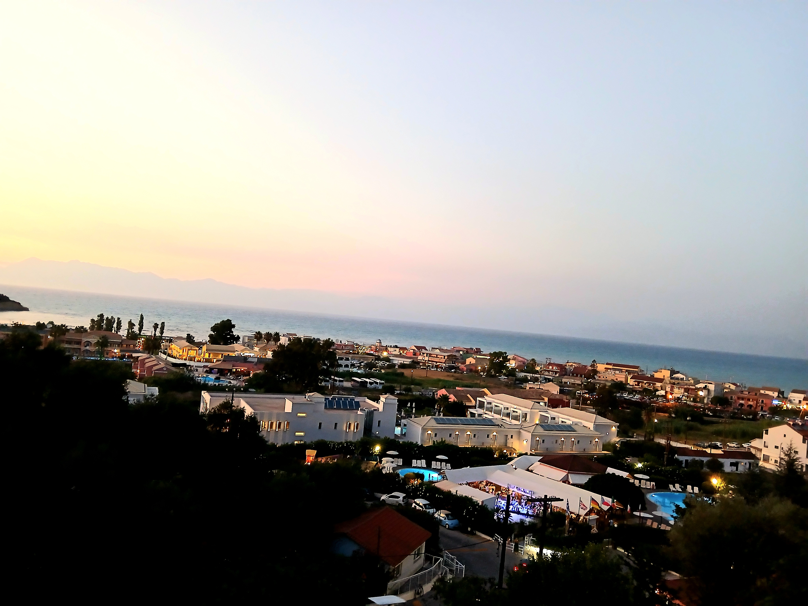

Author: Terrance Schotsman
Greece's Population Problem
Introduction
The country of Greece is infamous for its economy. If it devoted the entirety of the money made in the country in the span of a year(GDP) to the cause of paying off its national debt, it would still take all of it and more. A slightly lesser known problem Greece has is with its aging population; it is the third oldest in the EU after Italy and Germany. Greece has an elderly population that makes up 19.4% of its total.
Reasons for these problems
The reasons for this demographic shift are common: - A post-war baby boom in the 1950s - Increased strain on public systems because of this elderly generation - Reduced general opportunities causing low employment - Emigration for better pay and quality of life
These are generally quite frequent happenings, but other countries may not have had them coincide in such catastrophic ways. Greece was affected worse than the rest of Europe by several financial crises, and this debt has essentially made them dead weight to the EU. Joining in the first place was debated heavily, as Greece didn't seem to have much to offer. Even when they joined the EU in 1981, their debt to GDP was already rising and the country was still poorer than most EU nations. Then, in 2001, they joined the Eurozone and adopted the Euro as legal tender. From a national perspective, this seemed like an easy decision to make. Giving up an unstable local currency for a strong one that increases the ability to trade and make ties with the neighboring countries is generally a great idea, but a few years afterwards, when citizens began to get used to the new currency and it had been fully integrated instead of the drachma, the global financial crisis of 2008 struck, devastating the country. At a similar time, it came to light that the debt to GDP numbers it reported for the years before it joined the EU had deliberately been edited too meet one of the demands of the Maastricht Treaty. The Maastricht Treaty was a key turning point in the "European Communities" that existed since the end of World War II becoming the European Union as we know it today. It introduced some integral measures to the Union such as: - Increasing requirements of cooperation between member states - Creating the concept of EU citizenship that gives anyone residing within a member state the ability to live, work, and vote in any other member state as well as their own. - The introduction of a shared currency that would integrate member states further, the Euro. - Created a framework through which non-member states could apply, including a restriction that the applying state must have a debt to GDP ratio below 60% at time of applying. Greece did not meet this requirement, so the government changed the figures shown in the fiscal statements of the years prior. Then, right after recovery from the financial crisis, the Syrian Civil War broke out, and millions of refugees fleeing the country, Greece's position as relatively nearby meant that it received many of them. All these sudden changes combined with the government's frequent overspending meant that almost any administration, no matter how good, would struggle to make the right decisions in this environment.
Why Greek seniors are living longer
Greece currently has an average life expectancy of 82 years, putting it on par with others like Canada, the Netherlands, and most of Scandinavia. It has achieved these figures through excessive spending on the medical industry, which is part of why its debt is so incredibly large. Another factor in the longevity of the Greek population is the Mediterranean lifestyle and cuisine, which focuses on vegetables and grilled meats. The cardiovascular effects of frequently eating meat have been mostly negated in recent years by frequent preventative screenings reaching 78% of citizens at risk. The island of Ikaria is an example of this; it is less open to tourists or wealthy than most of Greece, and it has an older population than mainland Greece as well, but people on the island live 8-10 years longer on average, because of the traditional lifestyle. Afternoon naps, the consumption of herbal tea, and collective social activities are core aspects of Ikarian life. These qualities persist throughout Greece and the Mediterranean countries, but have receded due to increased influence from modern Western ideologies.
Conclusion
Despite the many problems Greece is facing today, it is unlikely much will come of them. The lands were an early cradle of human civilization, and I doubt anything could take the Greek culture, language, and people out of Greece. It has had many ups and downs in the millennia it has been settled, but they have always bounced back. Despite the troubles it has caused, the modern government has still done many things correctly, and I believe recent protests of this debt and tax increases fail to see the underlying effort that has gone in to make their lives as livable and enjoyable as they are.

Works Cited
View Works Cited
“- YouTube.” Youtu.Be, youtu.be/U205Njf-MC8?si=2uD9FoIS-vonRxvr. Accessed 6 Feb. 2026.
Enjambre, Dave. “How Greece Is Devastated by Its Immigration Crisis.” GHD, 5 May 2025, www.greecehighdefinition.com/blog/how-greece-is-devastated-by-its-immigration-crisis.
Gemi, Eda, and Bledar Feta. “Report Prepared for the OECD International Migration Outlook, 2024.” Eliamep.Gr, www.eliamep.gr/wp-content/uploads/2025/03/Working-paper-131-SOPEMI-1.pdf. Accessed 6 Feb. 2026.
“Greece Debt Clock - National Debt of Greece.” DebtClock.Io, 6 Feb. 2026, debtclock.io/greece.
“Greek Drachma Effective Exchange Rates for 1990 from the Bank for International Settlements.” Poundsterlinglive.com, www.poundsterlinglive.com/bank-of-england-spot/historical-effective-exchange-rates/GRD-history-1990. Accessed 6 Feb. 2026.
Kalmouki, Nikoleta. “Greece Holds One of the Highest Aging Rates in Europe.” Greekreporter.com, 12 Mar. 2014, greekreporter.com/2014/03/12/greece-holds-one-of-the-highest-aging-rates-in-europe/.
Kantouris, Costas. “Greece’s Prime Minister Makes Border Wall an Election Pledge.” Independent, The Independent, 31 Mar. 2023, www.independent.co.uk/news/world/americas/us-politics/greece-ap-kyriakos-mitsotakis-turkey-european-union-b2311868.html.
Magra, Iliana. “Greece Bracing for Demographic Shift as Aging Accelerates.” ΚΑΘΗΜΕΡΙΝΕΣ ΕΚΔΟΣΕΙΣ ΜΟΝΟΠΡΟΣΩΠΗ Α.Ε. Εθν.Μακαρίου & Φαληρέως 2, 7 Apr. 2025, www.ekathimerini.com/economy/1266242/greece-bracing-for-demographic-shift-as-aging-accelerates/.
“Population Pyramids of the World from 1950 to 2100.” Populationpyramid.net, www.populationpyramid.net/greece/2024/. Accessed 6 Feb. 2026.
“Spotlighting the World Factbook as We Bid a Fond Farewell.” Cia.gov, www.cia.gov/the-world-factbook/field/life-expectancy-at-birth/. Accessed 7 Feb. 2026.
Mfa.Gr, www.mfa.gr/brussels/en/permanent-representation-eu/greece-in-the-eu/greeces-course-in-the-eu.html. Accessed 6 Feb. 2026.
Britannica.com, www.britannica.com/event/Maastricht-Treaty. Accessed 6 Feb. 2026.
Sharpinvestmentproperties.com, sharpinvestmentproperties.com/2025/05/21/greece-life-expectancy-2025-health-indicators-and-eu-comparison/. Accessed 7 Feb. 2026.